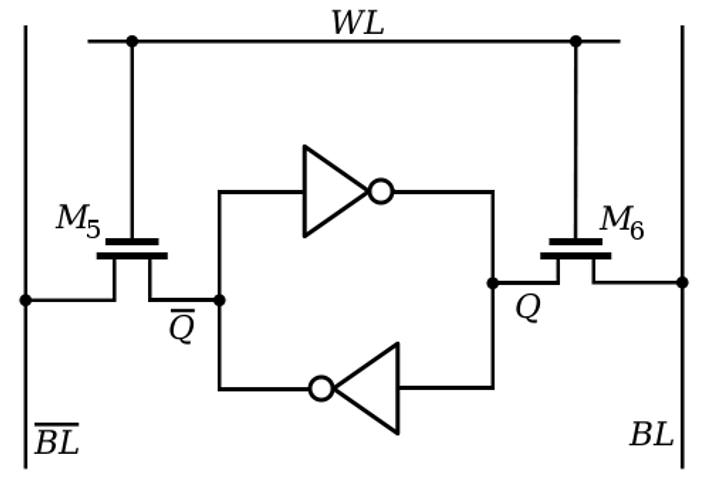
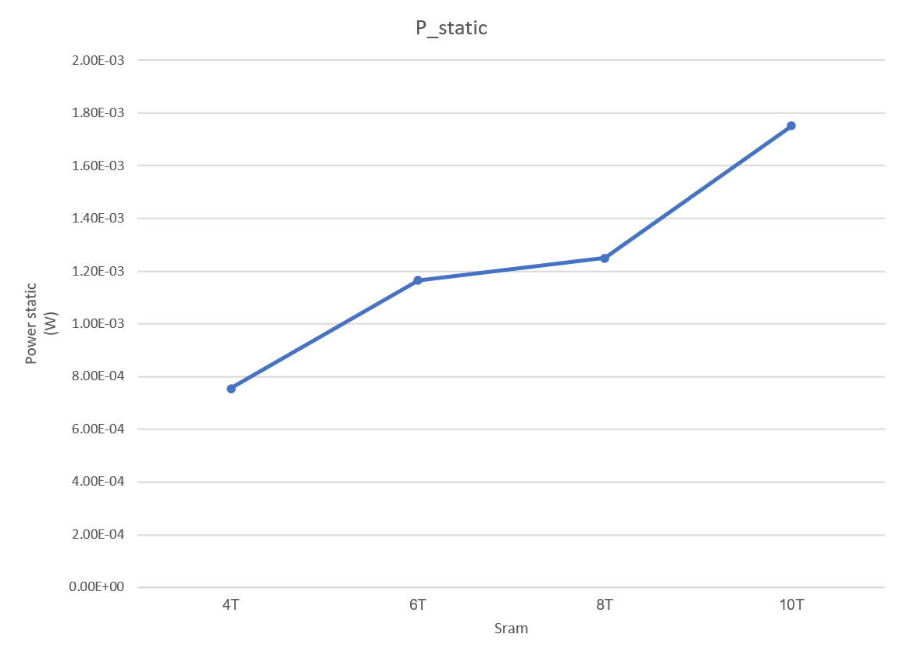
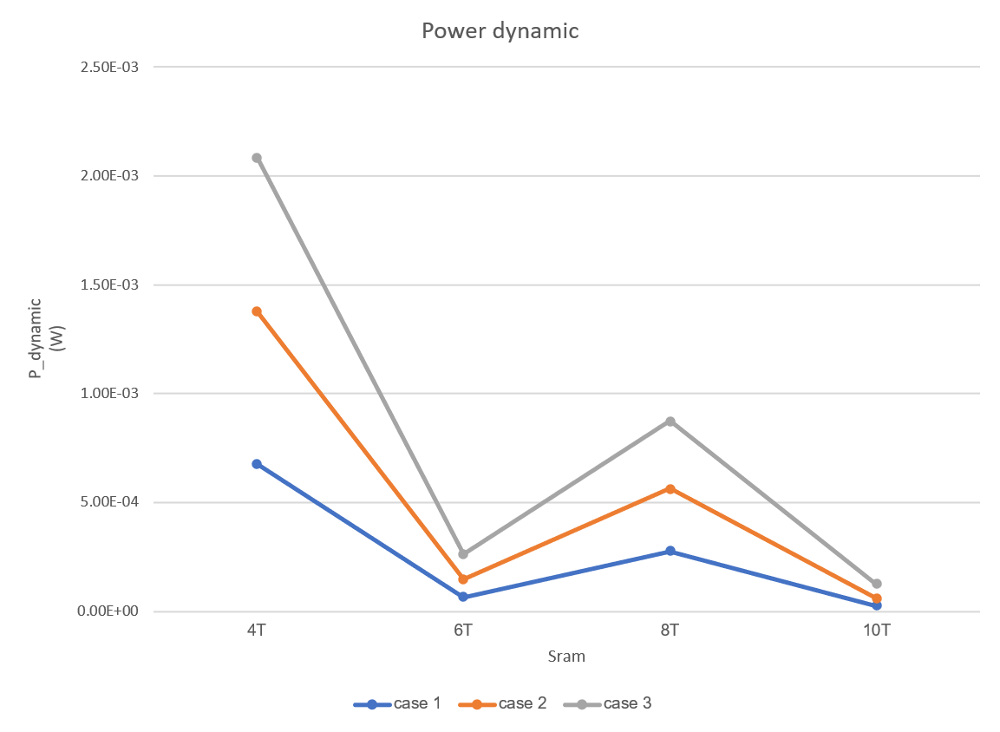

Comparative Design of SRAM Cells in 90nm CMOS
Design, simulation, and evaluation of 4T, 6T, 8T, and 10T SRAM cells using Cadence tools
Project Overview
This project presents the full-custom schematic and layout design of four types of SRAM cells (4T, 6T, 8T, and 10T) implemented in 90nm CMOS technology using Cadence Virtuoso. Each design was evaluated for write/read stability, power consumption, and area. The goal is to identify the optimal SRAM cell structure under different scenarios including high-speed computing, low-power IoT applications, and robust memory blocks.
1. 4T SRAM Cell
2. 6T SRAM Cell

3. 8T SRAM Cell
4. 10T SRAM Cell
Performance Comparison
Static Power Consumption Comparison
Dynamic Power Consumption Comparison
Access Delay Comparison
P total Comparison
Conclusion
- 4T: Best write performance but poor noise margin.
- 6T: Balanced power, speed, and stability; commonly used in modern SRAMs.
- 8T: Separate read/write paths increase reliability and read speed.
- 10T: Most stable and energy-efficient, suitable for low-power IoT systems.